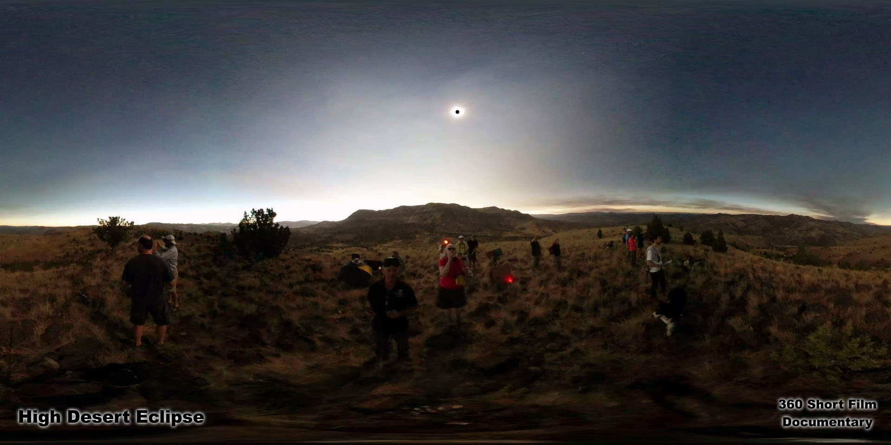
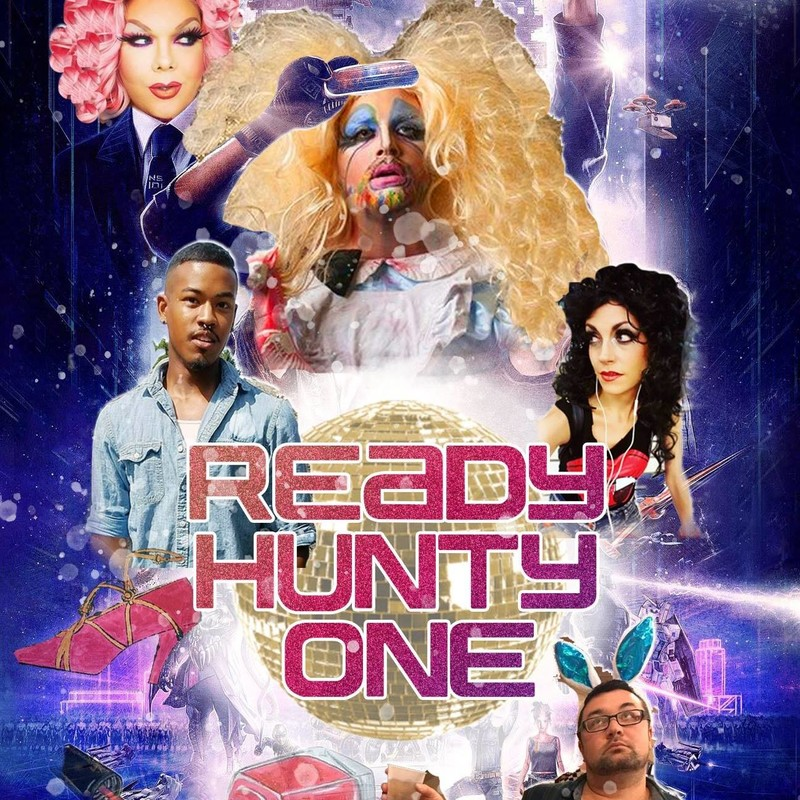

Kremfest 2019 Virtual Reality LineUp
Virtual Reality festival portion presented by: UpLiftVR Studios / VR Maker Dome
As a part of Kremfest 2019 we are presenting VR short films from around the globe along with UpLiftVR ‘Maiden Flight’ Balloon Ride and High Desert Eclipse. Feel as though you are lifting into the heavens or witness day turns into night as the stars align without ever leaving the venue. “All Around You'' takes you on a futuristic musical flight that lands you in Times Square. For autumn festivities be summoned by a gothic coven deep in a forest in “Blood Sisters”. Become the Canine in Chief piloting a spacecraft while fighting off aliens in the comedic animated short “Space Chase with Spot!”. Get a private dance from your favorite avatar possibly in drag during “Ready Hunty One”. And for an early Halloween treat from France and at Tribeca Film Festival NYC you only have “7 Lives” in this haunting surreal thriller as you experience coming to terms with one's demise.
With content from all over the USA and France, you’ll get to live these different realities envisioned in their makers minds eye and presented to you in a HTC Vive or an Oculus GO.
State of the art VR recording of Kremfest will also be taking place throughout the festival so you can relive those builds and drops in HD 360 video after the fest!
✦
2019 Showcase Lineup at a Glance
- UpLiftVR ‘Maiden Flight’ Balloon Ride • Larry James & Julia Jackson • 3:30 min • Seattle, USA
- High Desert Eclipse • Larry James & Julia Jackson • 6:30 min • Seattle, USA
- All Around You • Cristiano Adiutori / Mike Ziga • 5:54 min • NYC, USA
- Blood Sisters • Clea Cullen, Savannah Sands, & Kelsey Mansfield • 3:37 min • Georgia, USA
- Space Chase with Spot! • Ryan Rogers • 2:54 min • California, USA
- Ready Hunty One • Brad Cerenzia & Stephanie Tayengco • 15:00 min • Seattle, USA
- 7 Lives • Charles Ayats, Sabrina Calvo, Jan Kounen • 17:07 min • France
✦
Headline Experiences from UpLiftVR Studios

UpLiftVR ‘Maiden Flight’ Balloon Ride
By Larry James & Julia Jackson
Feeling as if you are lifting into the heavens on a balloon maiden flight you find yourself overlooking a wondrous lucid dreamlike land calling out to be explored.
While launching into the heavens on a balloon ride’s experimental flight, you find yourself overlooking a wondrous land calling out to be explored. During your descent from the clouds to the grounds below, you get the feeling that this could be just the beginning of a series of grand adventures.
- Genre: Animated / Interactive Cinematic VR Experience
- Runtime: 3:30 min
- Format: Room Scale VR - HTC Vive
- VR Comfort: Moderate
✦

High Desert Eclipse
By Larry James & Julia Jackson
From a remote majestic hilltop overlook the rapidly encroaching shadow of the moon turns day into twilight and the entire panoramic high desert scenic horizon becomes either sunrise or sunset.
High Desert Eclipse is a 360 short, filmed from a majestic hilltop overlook in the remote Oregon high desert during the great American eclipse of August 21, 2017. Spanning 120 seconds pre- and post-totality, the rapidly encroaching shadow of the moon turns day into twilight and the entire scenic horizon becomes either sunset or sunrise.
- Genre: 360° Documentary Short
- Runtime: 6:30 min
- Format: 4K 360° Video
- VR Comfort: Comfortable
✦
2019 Official Selections

All Around You
By Cristiano Adiutori / Mike Ziga
A journey to explore the limit of the universe in 360 VR. A trilogy of the next phase of humanity's evolution, whisking the viewer across spatial dimensions and landing in Times Square. Music composed & produced by Cristiano Adiutori; Produced by Jump into the Light.
- Genre: 360 Music Video / Experimental
- Runtime: 5:54 min
- Format: Mono 360 video
- VR Comfort: Moderate (slow camera movement, pans, & flying around scenes)
✦

Blood Sisters
By Clea Cullen, Savannah Sands, & Kelsey Mansfield
A VR Experience in the center of a cult of witches performing a sacred ritual. Summoned by a gothic coven deep in the forest for a spooky, surreal autumn celebration.
- Genre: Surreal / Thriller / Sci-Fi / Spiritual / Horror
- Runtime: 3:37 min
- Format: Stereo (3D) 360 video
- VR Comfort: Comfortable (Stationary camera with Stereo 360)
✦

Space Chase with Spot!
By Ryan Rogers
The viewer is Spot the dog, flying past space junk and dodging asteroids in the 360 degree short film 'Space Chase with Spot!'. In this hand-drawn universe, Spot must fight off angry aliens to return safely back to Earth. Produced by Northampton Community Television (NCTV).
Director Biography: Ryan Rogers was raised in southern California and has a background in classical cello performance and stage theater. He studied music and video production at Hampshire College, where he became passionate about accessible filmmaking and non-traditional storytelling.
- Genre: 360 Animated Comedy SciFi Family Short
- Runtime: 2:54 min
- Format: 360 Video
- VR Comfort: Comfortable (In vehicle fixed camera)
✦

Ready Hunty One
By Brad Cerenzia & Stephanie Tayengco
Reality can be such a ... drag. Ready Hunty One is an entertaining, drag-tacular immersive experience exploring drag, gender, identity, and non-conformity via motion capture, VR programming, 3D 360 session footage, and behind-the-scenes interviews with five talented drag artists. Produced by Mamches Productions.
- Genre: Interactive VR Animation Dance
- Runtime: 15:00 min
- Format: Full VR 6 Degrees of Freedom
- VR Comfort: Comfortable
✦

7 Lives
By Charles Ayats, Sabrina Calvo, Jan Kounen
Tokyo. A teenage girl jumps in front of a subway train. Her soul rises from the tracks. On the platform, witnesses are in shock as traumatic memories play out again and again. To end its wandering, the soul must pass into each of their minds, delve into their memories, and help them find peace. Produced by Marie Blondiaux.
- Genre: 360 Ghostly Thriller
- Runtime: 17:07 min
- Format: 360 Video
- VR Comfort: Moderate
✦
UpLift VR Studios, VR Maker Dome, SIXR and Infinity Quest Present VR Experiences sponsored by Vuze Cameras and KremFest.